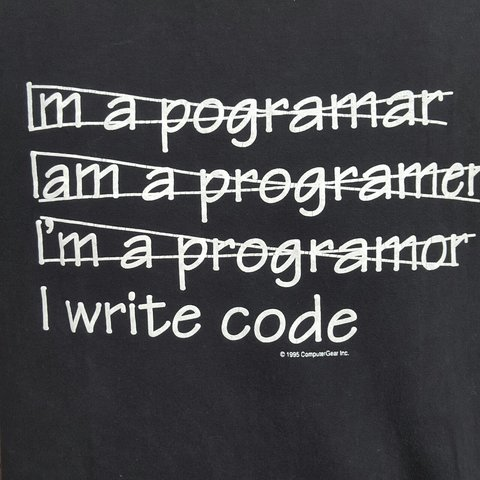

Die ersten zwei Strophen
Fest gemauert in der Erden, steht die Form aus Lehm gebrannt. Heute soll die Glocke werden, frisch Gesellen, seid zur Hand! Von der Stirne heiß, rinnen muss der Schweiß. Soll das Werk den Meister loben, doch der Segen kommt von oben.
Zum Werke, das wir ernst bereiten, geziemt sich wohl ein ernstes Wort; wenn gute Reden sie begleiten, fließt die Arbeit munter fort. So laßt uns jetzt mit Fleiß betrachten, was durch die schwache Kraft entspringt, den schlechten Mann muß man verachten, der nie bedacht, was er vollbringt. Das ist's ja, was den Menschen zieret und darum ward ihm der Verstand; daß er im innern Herzen spüret, was er vollbracht mit seiner Hand.